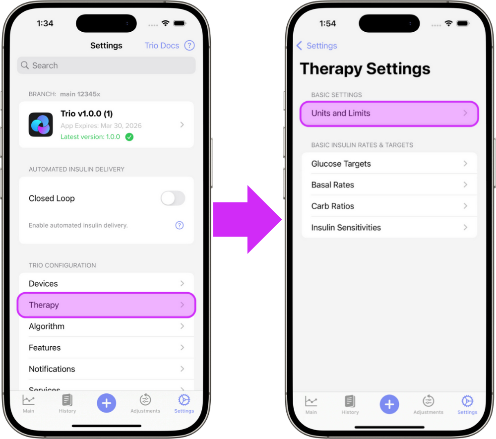
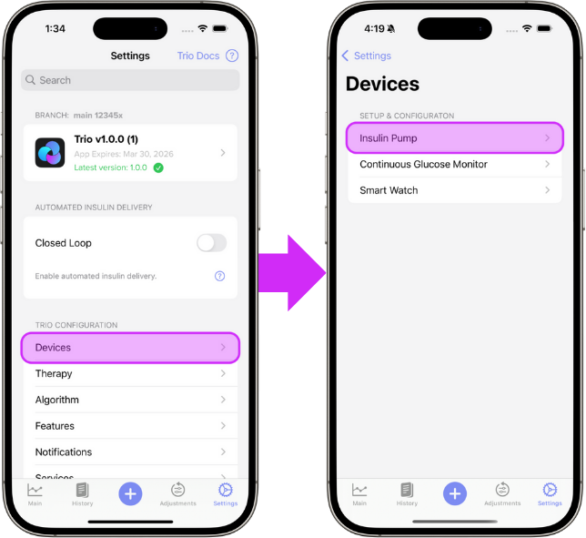
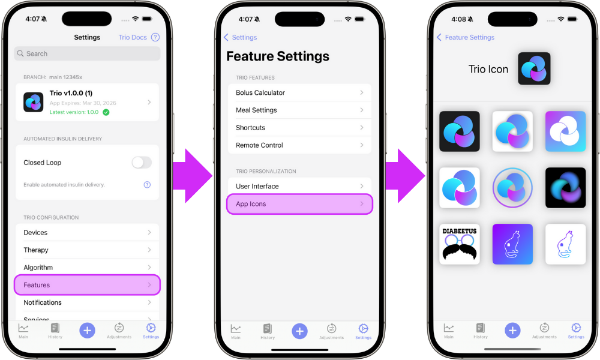

New User Setup Guide
Welcome to the New User Setup Guide and congratulations on a successful Trio build! This guide walks you through how to set up your Trio app once you have installed it on your phone.
If you still need to install the app, head to the Build Instructions for Mac or Browser and come back here when you are ready to start the setup process!
Onboarding Wizard
Trio has an Onboarding Wizard that walks you through these steps when you first start the app. Each step contains a tab for During Onboarding and After Onboarding, explained below.
Jump to:
Need help finding these settings in your current DIY app?
If you are coming from another Open Source Automated Insulin Dosing (OS-AID) app, these guides may help you with finding these settings in your previous app and inputing them into Trio.
Step 1: Prepare Trio
In this step, you'll configure diagnostics sharing, optionally sync with Nightscout, and enter other essential setup information.
Diagnostics
By default, Trio collects crash reports and other anonymized data related to errors, exceptions, and overall app performance. Sharing this data helps developers maintain and improve the app. This is completely anonymous and optional.
Tip
If you select Enable Sharing, you must also read and accept the Privacy Policy in the Onboarding Wizard before you are able to proceed.
Nightscout
Nightscout is a cloud-based platform that allows you to store your diabetes data.
Nightscout is not required and can be added at a later time under Services in the Settings menu of the app.
Units & Pump
In the Onboarding Wizard, you will select your Glucose Units and Pump Model, but you will not pair your pump yet. You will pair your pump and CGM after completing the Onboarding process (See Step 7).
Edit Diagnostics
To enable or disable sharing after you've completed onboarding, open the settings menu, then Features, then App Diagnostics. Here you will find the ability to adjust sharing as well as the Privacy Policy.
Edit Nightscout
To connect or edit your Nightscout credentials after you've completed onboarding, follow the guidance here.
Edit Glucose Units

Learn more about setting your Glucose Units
Edit Insulin Pump

Learn how to connect or change your insulin pump
Step 2: Therapy Settings
The next step is to enter your Therapy Settings. These include:
- Glucose Targets: Trio's dosing will aim for this glucose when calculating insulin dosage
- Basal Rates: Used as a baseline for increasing or decreasing insulin needs
- Carb Ratios: How many grams of carbohydrate are countered by 1 unit of insulin
- Insulin Sensitivities: How much 1 unit of insulin will lower your blood glucose
Step 3: Delivery Limits
In this step you will set the boundaries for insulin delivery and carb entries to help Trio keep your insulin dosing safe, yet effective.
Step 4: Algorithm Settings
Trio includes several algorithm settings that allow you to customize the Oref algorithm behavior to suit your specific needs.
To configure the algorithm, you'll define the settings for Autosens, Super Micro Bolus (SMB), and Target Behavior.
Go Slow
- This step may feel overwhelming, so take it slow and use the links shared below to help guide your choices.
- Our strong recommendation is to leave everything on the default settings as a new user.
Important information for this step:
- DynamicISF requires at least 7 days of data and is not yet configurable
- Even if you're an updating user, you'll be guided through this step-by-step. It is important to read each step as some things may have changed
- All additional "advanced settings" have been reset
- The duration of insulin action (DIA) is now locked to Trio's new default of 10 hours.
- We strongly recommend not changing DIA as it is essential for an accurate IOB calculation and necessary for safe and stable operation.
Autosens
Autosensitivity, or Autosens, adjusts insulin delivery based on observed sensitivity or resistance.
Step 1: Set Autosens Min
This is the lower limit of the Autosens Ratio.
Step 2: Set Autosens Max
This is the upper limit of the Autosens Ratio.
SMB (Super Micro Bolus) is an oref algorithm feature that delivers small, frequent boluses instead of temporary basal adjustments, creating a more responsive system. The onboarding options are different depending on what you choose for Step 3.
Step 3: Enable/Disable SMB Always
When this setting is enabled, Super Micro Boluses (SMBs) will always be allowed if dosing calculations determine insulin is needed via the SMB delivery method. The exception is when a high temp target is set. Enabling SMB Always will skip the other individual SMB options during the onboarding process.
If you do not want to always allow SMBs, and would rather be more selective with the SMBs you enable, keep Enable SMB Always OFF and the individual SMB options will appear next.
Step 3a: Enable/Disable SMB with COB
Enabling this feature allows Trio to administer SMBs when there are carbs on board (COB).
Step 3b: Enable SMB with TempTarget
Enabling this feature allows Trio to deliver insulin required using SMBs at times in which a manual temporary target (temp target) under 100 mg/dL (5.5 mmol/L) is set.
Step 3c: Enable SMB After Carbs
Enabling this feature allows Trio to deliver insulin required using SMBs for 6 hours after any carb entry, regardless of whether there are active carbs on board (COB).
Step 3d: Enable SMB with High Glucose
Enabling this feature allows Trio to deliver insulin required using SMBs when your glucose reading is above the value set as your High Glucose Target. This additional setting will appear when you enable this feature.
Step 4: Allow SMB with High Temp Target
This is the only setting not enabled when Enable SMB Always is turned on. Turning this setting on will allow SMBs when a manual Temp Target is set greater than 100 mg/dL (5.5 mmol/L).
Warning
This type of Temp Target is often set as a low recovery step. If you set a high temp target when recovering from a low to avoid over treatment during recovery, it is advised to keep this setting OFF.
Step 5: Enable UAM
Best practice is to have both UAM and SMBs enabled at the same time. If you have enabled SMB Always (or plan to enable individual SMBs as soon as you complete onboarding), it is advised to turn Enable UAM ON during this step.
Tip
The settings in Steps 6, 7, and 8 are often misunderstood. Follow the links to understand what they do more clearly.
Step 6: Set Max SMB Basal Minutes
This setting limits the size of a single SMB dose.
Step 7: Set Max UAM Basal Minutes
This setting limits the size of a single unannounced meal SMB dose, aka UAM.
Step 8: Set Max Allowed Glucose Rise for SMB
This setting disables SMBs if the last two glucose values differ by more than this percent.
Target Behavior
Target Behavior allows you to adjust how temporary targets influence ISF, basal, and auto-targeting based on sensitivity or resistance.
Step 9: High Temp Target Raises Sensitivity
This setting increases sensitivity when glucose is above target if a manual Temp Target > 100mg/dL (5.5mmol/L) is set.
Step 10: Low Temp Target Lowers Sensitivity
This setting decreases sensitivity when glucose is below target if a manual Temp Target < 100mg/dL (5.5mmol/L) is set.
Step 11: Sensitivity Raises Target
This setting raises the glucose target if the Sensitivity Ratio is > 1.0.
Step 12: Resistance Lowers Target
This setting lowers the glucose target if the Sensitivity Ratio is < 1.0.
Step 13: Half Basal Exercise Target
This setting scales your basal rate such that your basal will be set to 50% at this value. This setting is only applied when High Temp Target Raises Sensitivity and/or Low Temp Target Lowers Sensitivity are enabled.
New To Trio?
- Before you adjust these settings, it is important to know what and why you are making those changes.
- Start with the default limits for a few days or weeks before you adjust them.
Edit Autosens
Autosensitivity, or Autosens, adjusts insulin delivery based on observed sensitivity or resistance.
Below you'll find more information on the Autosens settings:
Edit Super Micro Bolus (SMB)
SMB (Super Micro Bolus) is an oref algorithm feature that delivers small, frequent boluses instead of temporary basal adjustments, creating a more responsive system.
Tip
- Best practice is to have both UAM and SMBs enabled at the same time. If you enable any SMBs, also enable UAM.
- Individual SMB Options are inclusive, not exclusive. Only ONE enabled setting needs to be true for SMBs to be allowed. More info in the flow chart: Are SMBs Allowed?
Below you'll find more information on the SMB settings:
Edit Target Behavior
Target Behavior allows you to adjust how temporary targets influence ISF, basal, and auto-targeting based on sensitivity or resistance.
Below you'll find more information on the Target Behavior settings:
High Temp Target Raises Sensitivity
Low Temp Target Lowers Sensitivity here
Sensitivity Raises Target
Resistance Lowers Target
Half Basal Exercise Target
Step 5: Notifications
In this step you will allow Trio to send you notifications. These include alerts, sounds, and icon badges of your choosing. Notifications give you important Trio information without requiring you to open the app. It is essential that these are allowed in your iPhone system settings. Once you complete onboarding, you can customize your notifications.
To edit Notifications after you've completed onboarding, head over to the Notifications section for more information on each type of notification and how to edit them.
Step 6: Bluetooth
Trio requires Bluetooth to function as a (hybrid) closed-loop system. If you do not have Bluetooth enabled in your iOS settings, you will not be able to connect your phone to your insulin pump or CGM. A pop up will appear that makes this easy to enable if it hasn't been already.
Congratulations!
But, you're not done yet!
<
Steps 7 & 8 are not in the Onboarding Wizard
These cannot be completed until you've finished onboarding, but must be completed before you can start using Trio.
Step 7: Connect Your Devices
Connect your Insulin Pump
Connect your CGM
Connect your Watch
Step 8: Choose Dosing Mode
After connecting your pump and CGM, open Settings → Dosing Mode. Trio 1.0.2 offers Closed Loop, Open Loop, Low Glucose Suspend and Basal Testing. The default is Open Loop, which displays recommendations without enacting automated dosing or low protection.
Closed Loop permits full automation subject to settings and safety checks. Low Glucose Suspend permits predictive reductions with effective Max IOB 0. Basal Testing uses low-only suspension and derives additional sensitivity constraints while preserving saved preferences. Read Dosing Modes before choosing the mode for your intended workflow.
Earlier Closed Loop switch screenshots do not represent this picker. Manual actions are separate from automated enactment; choosing a mode does not itself validate an individual bolus.
Dynamic Settings
Trio will not allow you to enable Dynamic Settings until it has accumulated 7 days of data. This is essential so Trio can make sound dosing recommendations. Once it has enough data and you can enable Dynamic Settings, it is still recommended that you have already...
- ...tuned your core Trio settings (ISF, CR, and Basal Rates) for use in the Oref algorithm.
- ...used Trio with a real CGM and real pump (not simulators) for the recommended minimum of 7 consecutive days.
- ...read and understand the Dynamic Settings and how they interact with each other.
DO NOT ALTER ANYTHING ELSE UNTIL YOU'VE TESTED AND VERIFIED YOUR SETTINGS
- If you are coming from another Oref-based system, like Trio 0.2, iAPS, or AAPS, you will want to watch your current settings to ensure they are performing as they did previously. You may need to make some adjustments, but you also may find your settings work as well as they did in the previous system.
- If you are coming from Loop, a commercial system, or multiple daily injections (MDI), you will want to first test your settings to ensure they do not require any adjustments. You've been using a completely different algorithm to manage your insulin dosing and that means you've tailored your settings to be optimized using that method of dosing. Because Trio uses a different algorithm, your settings will almost assuredly need to be adjusted to work optimally within the Oref algorithm.
Step 9: Change App Icon (Optional)
Under "App Icons" in the Settings Menu, you can find various icons for your Trio app.

Congratulations! You've completed the New User Setup for Trio!
1.0.2 source references
- F01 — Dosing Mode replaces the documented Closed Loop switch
- F02 — Mode overrides differ from the documented manual basal-testing recipe